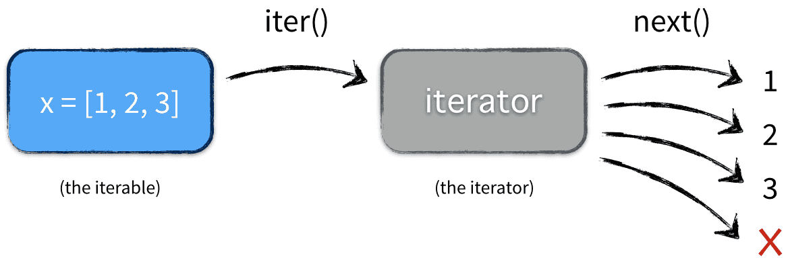

python-迭代
可迭代对象
python 中涉及类似 for, in 等各种容器操作，这些操作通常都要求他们是可迭代的类型。只要定义了 __iter__ 或 __getitem__ 就是可迭代对象，可以通过 iter() 来判断是否是可迭代对象。
from typing import Any, Iterable
class ListStartWith1:
def __init__(self, n: int):
self.__n = n
self.__list = [i + 1 for i in range(n)]
def __getitem__(self, index: int):
if index > self.__n or index < 1:
raise IndexError
return self.__list[index - 1]
def __len__(self):
return self.__n
l = ListStartWith1(3)
v = l[1]
print(iter(l))
print(isinstance(l, Iterable))从上面的代码可以看出 isinstance(obj, Iterable) 的方式只能检查是否有 __iter__ 方法，并不能完全检查出是否是可迭代对象，更可靠的方式是通过 iter() 来判断是否是可迭代对象。iter(obj) 返回一个迭代器，因此可迭代类型的判断依据是能否返回迭代器。
所有的序列类型 Sequence 都是可迭代对象，如 list, tuple, str 等都是可迭代的
迭代器
可迭代对象使用 iter() 方法会返回一个迭代器 iterator，迭代器需要实现迭代器协议 [^1]
迭代器协议
iterator.__iter__()
返回iterator对象本身。 这是同时允许容器和迭代器配合 for 和 in 语句使用所必须的。iterator.__next__()
iterator中返回下一项。 如果已经没有可返回的项，则会引发StopIteration异常。
一旦迭代器的__next__()方法引发了StopIteration，它必须一直对后续调用引发同样的异常。 不遵循此行为特性的实现将无法正常使用。

比如实现一个斐波那契数列的迭代器
class Fib:
def __init__(self, n: int):
self.__index = 0
self.__len = n
self.__cur = 0
self.__later = 1
def __iter__(self):
return self
def __next__(self):
if self.__index < self.__len:
val = self.__cur
self.__cur, self.__later = (self.__later, self.__later + self.__cur)
self.__index += 1
return (self.__index - 1, val)
else:
raise StopIteration从上面的代码可以看出，迭代器采用的是一种“懒加载”的方式，他没有一次性把所有东西都载入内存，而是需要的时候再算出来。
生成器
可以看到直接定义一个自己的迭代器还是挺麻烦的，为了简化，可以使用生成器。生成器是一种特殊的迭代器，有两种定义方式。
生成器函数：生成器函数通过 yield 来返回每次需要的值，然后函数会在此临时暂停处理，记住当前的执行位置，当恢复运行时，会从离开的位置继续执行
def fib(n: int):
print("start")
start = 0
cur, later = 0, 1
while start < n:
start += 1
yield (start - 1, cur)
cur, later = later, cur + later生成器表达式：这种写法更简单，写法类似与列表推导式，将列表推导式中的 [] 换作 () 即可
f = (i * i for i in range(10))可迭代对象、迭代器和生成器的关系可以用下图表示

推荐阅读
References
[^1]:迭代器类型 Python 3.12.0 文档
[^2]:Python迭代器和生成器详解 - 知乎
本博客所有文章除特别声明外，均采用 CC BY-NC-SA 4.0 许可协议。转载请注明来自 Ruoy's Blog！
相关推荐


评论